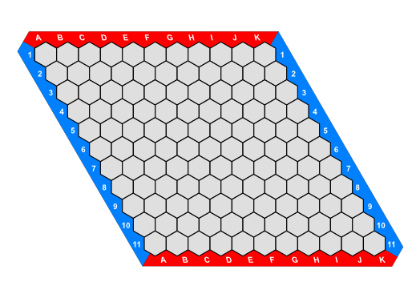

Le protocole SimpleHex est un protocole textuel pour le jeu de Hex qui permet à deux programmes de communiquer sur le déroulement d'une partie. Lorsqu'il est utilisé à travers un réseau TCP/IP, ce protocole est encapsulé dans une socket TCP ; les serveurs écoutent habituellement sur le port 6666.
Le protocole est synchrone, constitué d'une séquence de messages échangés entre le client et le serveur. Chaque message est une ligne de texte UTF-8 terminée par le caractère de fin de ligne dans la convention Unix (LF, ASCII Linefeed, noté '\n' en Python).
Une session du protocole débute par une phase d'initialisation. Elle est suivie de la partie proprement dite pendant laquelle les joueurs placent alternativement des pions. Elle se termine lorsqu'un joueur remporte la partie. La connexion est alors interrompue.
Un certain nombre d'extensions au protocole peuvent être mises en œuvre. Les extensions gérées par le client et par le serveur sont annoncées lors de la phase d'initialisation. Seules les extensions gérées par les deux programmes sont utilisées lors d'une partie.
Par convention, sauf extension particulière, le client joue en premier.
Par convention, le client joue bleu, il doit connecter horizontalement. Le serveur joue rouge, il doit connecter verticalement.

En début de session, le client envoie un message constitué de la commande bonjour suivie de la liste des extensions gérées, séparées par des espaces. Le serveur répond par un message de même nature. Seules les extensions annoncées par chacun des programmes seront prises en compte pour la suite du protocole.
>>> bonjour pileouface <<< bonjour pileouface gateau
Puis, le client envoie un message constitué de la commande joueur suivie du nom du joueur qu'il représente. Le serveur répond par un message de même nature.
>>> joueur Alice <<< joueur Bob
Enfin, le client envoie un message constitué de la commande tablier suivie d'une liste des tailles de tabliers proposées, séparées par des espaces. Le serveur répond par un message constitué de la commande tablier suivie de l'unique taille choisie par le serveur parmi les propositions du client. Si le serveur ne trouve pas de taille qui lui convient, il envoie le message dommage et interrompt la connexion.
>>> tablier 3 5 11 <<< tablier 11
Une fois l'initialisation terminée et le premier joueur déterminé, les joueurs placent alternativement leurs pions. Pour cela, ils envoient alternativement un message constitué de la commande joue suivie des coordonnées où placer le pion. Les coordonnées sont spécifiées au format alphanumérique constitué d'une lettre suivie d'un nombre (par exemple F5).
Si un joueur détecte un problème (coordonnée non valide, coup illégal) il envoie un message constitué du mot-clé oups suivi d'un message informatif.
>>> joue F5 <<< joue A1 >>> joue E2 <<< joue F5 >>> oups coup illégal !
Lorsqu'un joueur gagne la partie, l'autre joueur envoie le message bravo. La connexion est interrompue après l'échange de messages aurevoir.
<<< joue A1 >>> bravo <<< aurevoir >>> aurevoir
Voici une session observée en tant que client. Les caractères en début de ligne ne font pas partie de l'échange, ils indiquent qui du client (>>>) ou du serveur (<<<) envoie le message. Aucune extension n'est mise en œuvre car le serveur n'en gère aucune.
>>> bonjour pileouface gateau <<< bonjour >>> joueur Alice <<< joueur Bob >>> tablier 11 <<< tablier 11 >>> joue B2 <<< joue F6 >>> joue C3 <<< joue G4 >>> joue F5 ... >>> joue A10 <<< bravo >>> aurevoir <<< aurevoir
L'extension pileouface permet de déterminer au hasard et sans triche possible qui joue en premier. Pour cela, quatre messages commençant par la commande pileouface sont échangés à la fin de l'initialisation (après que la taille du tablier a été choisie), le client envoie le premier message.
Le client choisit un mot au hasard (x) et un tirage (p) parmi pile et face. Le serveur choisit lui aussi un mot au hasard (y) et un tirage (t).
Après ces échanges, le client et le serveur comparent t et p (directement ou en comparant f(x,y,t) et f(x,y,b)). Si le client a deviné le tirage du serveur c'est le client qui commence à jouer, sinon c'est le serveur.
Dans ce protocole, si le serveur essaie de tricher, le client peut le détecter. Dans ce cas le client envoie le message tricheur au serveur et interrompt la connexion.
Pour les mots au hasard, on pourra utiliser par exemple un UUID aléatoire : en Python from uuid import uuid4 puis str(uuid4()).
La fonction f(a,b,c) utilisée dans le protocole est obtenue en appliquant la fonction de hachage SHA256 sur la chaîne constituée de ses arguments séparés par des espaces et en notant la valeur obtenue en hexadécimal : en Python from hashlib import sha256 puis sha256(' '.join([a,b,c]).encode('utf8')).hexdigest()
Voici un exemple d'échange pileouface :
>>> pileouface 16c9c543-5290-4eef-a3fe-4e0cd8ec96b5 <<< pileouface aafc18993dda2d939f48e44d54cb764a4a711b52f93c24e6475abf3350129540 >>> pileouface face <<< pileouface 00b6591d-07a1-4a9e-8007-26898c4dc4d4
Et les calculs qui vont avec du point de vue du client :
x = 16c9c543-5290-4eef-a3fe-4e0cd8ec96b5 f(x,y,t) = aafc18993dda2d939f48e44d54cb764a4a711b52f93c24e6475abf3350129540 p = face y = 00b6591d-07a1-4a9e-8007-26898c4dc4d4 f(x,y,p) = aafc18993dda2d939f48e44d54cb764a4a711b52f93c24e6475abf3350129540 J'ai gagné car f(x,y,t)=f(x,y,p) !
Et les calculs qui vont avec du point de vue du serveur :
x = 16c9c543-5290-4eef-a3fe-4e0cd8ec96b5 y = 00b6591d-07a1-4a9e-8007-26898c4dc4d4 t = face f(x,y,t) = aafc18993dda2d939f48e44d54cb764a4a711b52f93c24e6475abf3350129540 p = face J'ai perdu car t=p !
Le premier joueur sera donc le client dans cet exemple.
Au jeu de Hex, le premier joueur a une stratégie gagnante. Pour équilibrer ce biais, la règle du gâteau permet au second joueur d'échanger les rôles après le premier coup. Avec cette extension, la partie se déroule normalement mais après le premier coup, le second joueur a le choix entre deux possibilités :
gateau pour indiquer qu'il devient le nouveau premier joueur et que le premier coup était le sien ; la partie se poursuit alors comme une partie normale.
Cette extension est plus délicate à mettre en œuvre car elle rend le protocole asynchrone.
Avec cette extension, le client ou le serveur peut à tout moment envoyer un message qui commence par la commande blabla suivie d'un message à destination de l'autre joueur. Ces messages n'affectent pas le déroulement de la partie proprement dite.
>>> bonjour pileouface gateau message <<< bonjour pileouface gateau message >>> joueur Alice <<< joueur Bob >>> tablier 3 <<< tablier 3 >>> pileouface 16c9c543-5290-4eef-a3fe-4e0cd8ec96b5 <<< pileouface aafc18993dda2d939f48e44d54cb764a4a711b52f93c24e6475abf3350129540 >>> pileouface pile <<< pileouface 00b6591d-07a1-4a9e-8007-26898c4dc4d4 >>> blabla Bonjour ! <<< blabla Bonne partie ! >>> blabla Toi aussi :-) <<< joue B2 >>> gateau >>> blabla Héhé ! <<< joue C3 >>> joue C2 >>> blabla Niark niark... <<< blabla Ca sent le sapin. <<< joue A3 >>> joue A2 <<< bravo <<< blabla Bien joué Alice ! >>> blabla Trop facile en 3x3... >>> aurevoir <<< aurevoir